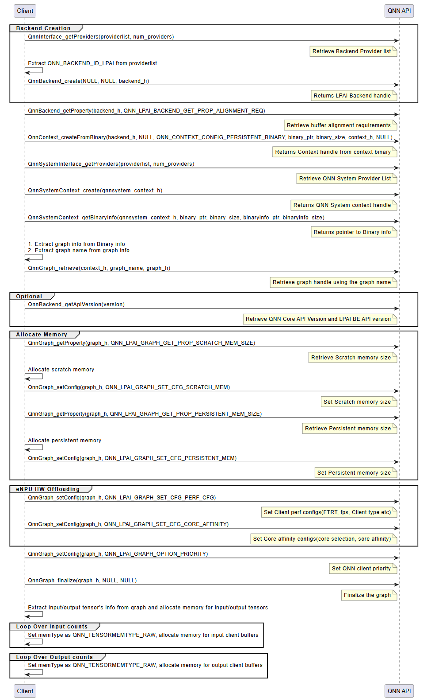
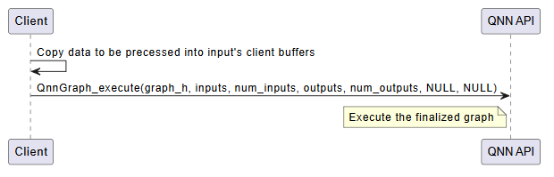
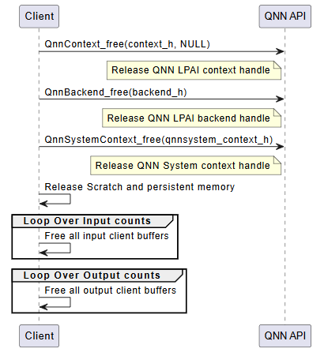

QNN API Call Flow¶
The integration of a QNN model using the LPAI backend follows a structured three-phase process. Each phase is critical to ensuring the model is correctly initialized, executed, and deinitialized within the QNN runtime environment.
Initialization¶
The initialization phase prepares the QNN runtime and the LPAI backend for model execution. This phase ensures that all required interfaces, memory resources, and configurations are correctly established before inference begins. It consists of the following key steps:
Interface Extraction
Retrieve the necessary interfaces to interact with the QNN runtime and the LPAI backend:
LPAI Backend Interface
Use
QnnInterface_getProviders()to enumerate available backend providers.Identify the LPAI backend using the backend ID
QNN_LPAI_BACKEND_ID.This interface is essential for accessing backend-specific APIs and properties.
QNN System Interface
Use
QnnSystemInterface_getProviders()to obtain system-level interfaces.Provides APIs for managing contexts, graphs, and binary metadata.
Handle Creation
Create runtime handles to manage backend and system-level resources:
Backend Handle: Created using
QnnBackend_create(), this handle manages backend-specific operations.System Context Handle: Created using
QnnSystemContext_create(), this handle manages system-level context and graph lifecycle.
Buffer Alignment Query
Query memory alignment requirements to ensure compatibility with the backend:
Use
QnnBackend_getProperty()withQNN_LPAI_BACKEND_GET_PROP_ALIGNMENT_REQ.Retrieve:
Start Address Alignment: Required alignment for buffer base addresses.
Buffer Size Alignment: Required alignment for buffer sizes.
Proper alignment is critical for correctness on hardware accelerators.
Memory Allocation for Context Binary
Allocate memory for the context binary, ensuring:
Alignment constraints are met.
Memory is allocated from the appropriate pool (e.g., Island or Non-Island memory).
Context Creation from Binary
Instantiate the QNN context using
QnnContext_createFromBinary():The context is immutable and encapsulates the model structure, metadata, and backend configuration.
This step effectively loads the model into the runtime.
Platform-specific configuration requirements:
Island Use Case: Pass the custom configuration
QNN_LPAI_CONTEXT_SET_CFG_ENABLE_ISLANDto enable island execution.Native ADSP Path: Use the common configuration
QNN_CONTEXT_CONFIG_PERSISTENT_BINARYto enable persistent binary support.FastRPC Path: No additional configuration is required.
Graph Metadata Retrieval
Use
QnnSystemContext_getBinaryInfo()to extract metadata embedded in the binary:Graph names
Versioning information
Backend-specific metadata
Graph Retrieval
Retrieve the graph handle using
QnnGraph_retrieve():Pass the graph name obtained in the previous step.
The graph handle is used for further configuration and execution.
Note
The following steps are specific to the Hexagon (aDSP) LPAI backend and are required for proper memory and performance configuration.
Scratch and Persistent Memory Allocation
Query memory requirements using
QnnGraph_getProperty():QNN_LPAI_GRAPH_GET_PROP_SCRATCH_MEM_SIZE: Temporary memory used during inference.QNN_LPAI_GRAPH_GET_PROP_PERSISTENT_MEM_SIZE: Memory required across multiple inferences.
Allocate memory accordingly, ensuring alignment and memory pool selection.
Memory Configuration
Configure the graph with allocated memory using
QnnGraph_setConfig():QNN_LPAI_GRAPH_SET_CFG_SCRATCH_MEMQNN_LPAI_GRAPH_SET_CFG_PERSISTENT_MEM
This step binds the allocated memory to the graph for runtime use.
See QNN LPAI Memory Allocations for more details.
Performance and Core Affinity Configuration
Optimize execution by configuring:
Performance Profile:
QNN_LPAI_GRAPH_SET_CFG_PERF_CFG(e.g., balanced, high-performance, low-power)Core Affinity:
QNN_LPAI_GRAPH_SET_CFG_CORE_AFFINITY(e.g., assign execution to specific DSP cores)
These settings help balance performance and power consumption.
Client Priority Configuration
Set the execution priority of the graph using:
QnnGraph_setConfig(QNN_GRAPH_CONFIG_OPTION_PRIORITY)
This is useful in multi-client or multi-graph environments where scheduling priority matters.
Graph Finalization
Finalize the graph using
QnnGraph_finalize():Locks the graph configuration.
Prepares internal structures for execution.
Must be called before any inference is performed.
Tensor Allocation
Retrieve and prepare input/output tensors:
Use
QnnGraph_getInputTensors()andQnnGraph_getOutputTensors().Set tensor type to
QNN_TENSORTYPE_RAW.Allocate and bind client buffers to each tensor.
Proper tensor setup ensures correct data flow during inference.
LPAI Initialization Call Flow

Execution¶
The execution phase is responsible for running inference using the finalized QNN graph. This phase is typically repeated for each inference request and involves the following steps:
Input Buffer Preparation
Populate the input tensors with data from the client application.
Ensure that the data format, dimensions, and layout match the model’s input specification.
Input tensors must be bound to client-allocated buffers, typically of type
QNN_TENSORTYPE_RAW.
Graph Execution
Invoke the model using
QnnGraph_execute().This function triggers the execution of the graph on the target hardware (e.g., eNPU).
The execution is synchronous; the function returns only after inference is complete.
Execution Flow:
Input data is transferred to the backend.
The backend schedules and executes the graph operations.
Intermediate results are computed and stored in backend-managed memory.
Final outputs are written to the output buffers.
Output Retrieval
After execution, output tensors contain the inference results.
These results are available in the client-provided output buffers.
The application can now post-process or consume the output data as needed.
Optional: Profiling and Logging
If profiling is enabled (via –profiling_level), performance data is collected during execution.
Profiling logs are written to the output directory and can be visualized using qnn-profile-viewer.
Error Handling
Check the return status of
QnnGraph_execute().Handle any runtime errors, such as invalid inputs, memory access violations, or hardware faults.
Important
Input and output buffers must remain valid and accessible throughout the execution.
Ensure that memory alignment and size requirements are met to avoid execution failures.
LPAI Execution Call Flow

Deinitialization¶
The deinitialization phase is responsible for releasing all resources allocated during the initialization and execution phases. Proper deinitialization ensures that memory is freed, handles are closed, and the system is left in a clean state. This is especially important in embedded or resource-constrained environments.
The following steps outline the deinitialization process:
Release QNN Context Handle
Call
QnnContext_free()to release the context created viaQnnContext_createFromBinary().This step invalidates the context and all associated graph handles.
Release LPAI Backend Handle
Call
QnnBackend_free()to release the backend handle created during initialization.This step ensures that backend-specific resources (e.g., device memory, threads) are properly cleaned up.
Release QNN System Context Handle
Call
QnnSystemContext_free()to release the system context.This step finalizes the system-level interface and releases any associated metadata or configuration.
Free Scratch and Persistent Memory
If memory was allocated manually for scratch and persistent buffers (e.g., on Hexagon aDSP), it must be explicitly freed.
These buffers are typically allocated based on properties queried via
QnnGraph_getProperty().
Free Input and Output Tensors
Release memory associated with input and output tensors.
This includes: - Client-allocated buffers bound to tensors - Any metadata or auxiliary structures used for tensor management
Optional: Logging and Diagnostics Cleanup
If profiling or logging was enabled, ensure that any open file handles or logging streams are closed.
Optionally, flush logs or export profiling data before shutdown.
Important
All deinitialization steps must be performed in the reverse order of initialization to avoid resource leaks or undefined behavior.
Failure to properly deinitialize may result in memory leaks, dangling pointers, or device instability.
LPAI Deinitialization Call Flow
